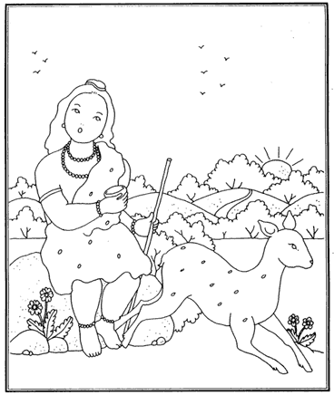

| La Historia De Bharata Maharaja
Hace muchos, muchos años, en el satya yuga, nació una encarnación de Krishna muy bella, llamada Rishabhadev. Él reinó sobre toda la tierra y tuvo cien hermosos hijos, a quienes instruyó diciendo: “mis queridos hijos, busquen los placeres del espíritu que son eternos e ilimitados, los de este mundo en cambio, pronto se desvanecen. Les pido además que sigan a su hermano mayor Bharata, sírvanlo sin envidia, pues él sabrá guiarlos.”
El gran rey Rishabhadev les dio muchas otras instrucciones y después de dejar el trono, deambuló por el mundo absorto en trance extático, ajeno a todo lo externo. Honra y deshonra, calor y frío, le eran lo mismo. A veces comía bien, a veces comía mal, y en otras ocasiones ayunaba, pero siempre se conservaba feliz y satisfecho. Así él enseñó el proceso de tyaga-yoga, mediante el cual uno se vuelve indiferente al mundo.
Su hijo Bharata era un gran devoto, y siguiendo las órdenes de su padre, ascendió al trono y se casó con Panchayani, la hija de Visvarupa. Su reinado fue tan bueno y próspero, que por él este planeta es llamado hoy Bharata-varsha. Fue tan afectuoso con sus ciudadanos, como su abuelo y su padre lo habían sido. Él llevó a cabo varios sacrificios o yajñas, para complacer a Vishnú y consideró a los semidioses como partes del cuerpo del Señor.
Después de disfrutar la vida real por muchos miles de años, dividió el reino entre sus cinco hijos y se retiró a Pulaha ashram, a hacer penitencias para complacer al Señor. En ese lugar fluye el río Gandaki, el cual está purificado por los Shalagram-shilas que se encuentran en él.

Una mañana en que estaba sentado a orillas del río, vio a un venado acercándose temeroso a beber agua: y cuando esto hacía, se escuchó el fuerte rugido de un león. El venado saltó asustado a la otra orilla, pero en el salto aborto un pequeño crío que cayó al río, mientras ella llena de dolor y aflicción, se arrastró hasta una cueva donde al entrar murió; el pequeño venado, llevado por la corriente, se debatía entre la vida y la muerte.
Bharata, al ver la triste condición del venado, sintió gran compasión y rescatándolo del agua, lo llevó a su ashram. Allí lo cuidó de ataques de tigres y leones, lo rascaba y acariciaba, y así, gradualmente, fue desarrollando un apego tal por él, que comenzó a declinar su práctica espiritual por servirlo. Comían y dormían juntos, y juntos salían de paseo. Cuando Bharata se sentaba a meditar; el venado lo interrumpía tocándolo con sus cuernos. De esa manera, por considerarlo desamparado y desprotegido, se aferró más y más a él; y cuando no lo veía, temía que le hubiese sucedido alguna desgracia, y no descansaba hasta verlo regresar.
Pasó el tiempo y llegó la muerte para el apegado rey. En ese momento el venado estaba sentado a su lado. Lamentando su partida. Bharata lo vio como a un hijo y murió pensando en él, por lo que tuvo que nacer como venado, pero con una diferencia especial, y es que en el cuerpo que tenía esta vez, recordaba todo lo referente a su vida pasada.
Bharata Maharaja lamentó mucho haber caído de su práctica devocional por causa del apego a un venado. En su nuevo cuerpo él se arrepentía de ello, y dejando a su madre, volvió al ashram de Pulaha, en el bosque Shalagrama. Esta vez se cuidó mucho de no tener mala compañía, se mantuvo solitario y silencioso, y sólo comía hojas secas. Por supuesto él no estaba solo, pues sentía la presencia del Señor en su corazón. Con paciencia esperó el momento en que dejó su cuerpo, bañándose en ese sagrado lugar.
Después de tener cuerpo de venado, Bharata Maharaja nació en una familia de brahmanas puros, descendientes del sabio Angira. Su padre era un brahmana pacífico, tolerante, religioso y equilibrado. Aun así Bharata, que en este nacimiento se llamaba Jada Bharata, se mostró como si fuese sordomudo, para evitar la mala asociación de aquellos que no son devotos. Él recordaba sus dos vidas pasadas, como el rey Bharata y como el venado, por eso esta vez era muy cauteloso. Su padre hizo lo posible por instruirlo en los Vedas, pero él se hizo pasar por inepto, como si fuera incapaz de aprender cualquier cosa.
Un día a su buen padre le llegó la muerte. Él tuvo dos esposas, con la primera tuvo nueve hijos y con la segunda tuvo a Jada Bharata y a una hija, esta segunda esposa decidió acompañar a su marido en la pila funeraria. Por lo que ahora Jada Bharata quedaba huérfano, a cargo de sus nueve hermanastros, los que por ser muy mundanos, no eran capaces de reconocer la elevada posición espiritual que Jada Bharata poseía. Sus hermanos mas bien comenzaron ha maltratarlo, le daban las sobras de la comida y lo insultaban. Él no se molestaba pues estaba en la plataforma trascendental y todo le era igual.
Como sólo trabajaba por comida, los hermanastros aprovecharon de ocuparlo en sus trabajos y en el cuidado del campo; aunque todo lo hacía en forma equivocada. Una noche, cuando cuidaba el arrozal de venados y jabalís, unos adoradores de Kali lo secuestraron considerándolo demente, con el fin de ofrecerlo a la diosa en el altar ; pues su líder deseaba la bendición de tener un hijo. Lo llevaron amarrado al templo, allí lo bañaron, lo vistieron y lo adornaron y perfumaron, y le sirvieron un suntuoso plato. Después de esto lo hicieron sentar a los pies de Kali.
En medio de los cantos y ofrendas que habían inventado para adorar a Kali, uno de ellos, oficiando como sacerdote, se acercó al santo con el fin de ofrecer su sangre, como si fuera un cálido licor que complaciera a la diosa. Para ello tomó una espada de pavoroso aspecto, y cuando la alzó para matarlo, la deidad de Bhadri Kali se rompió en mil pedazos, y ella misma apareció furiosa, le quitó la espada al malvado, y con ella misma le cortó la cabeza. Jada Bharata se fue del lugar alabando en su interior al Señor Supremo. Él sabía que Kali y todos los semidioses son sirvientes de Dios, y también sabía que todo está controlado por Él, por ello el santo no sentía ningún temor.
Después de este incidente el rey Rahugana y sus sirvientes encontraron a Jada Bharata en las orillas del río Iksumati. En ese momento el encargado del palanquín del rey necesitaba reemplazar a un cargador que había muerto mordido por una serpiente. Al ver el alto y fornido cuerpo de Jada Bharata, consideró que el mudo santo era muy apropiado para esa tarea. Jada Bharata, aunque no merecía ese trato en lo mas mínimo, aceptó ayudar a cargar el palanquín del rey sin protestar; pero a menudo él interrumpía el paso de los otros, pues estaba preocupado de no pisar ninguna hormiga.
El rey Rahugana al sentir el paso disparejo de sus cargadores se molestó y les dijo: Si no llevan el palanquín como es debido, los haré castigar. Al escuchar esto los cargadores se asustaron y le dijeron al rey: El nuevo cargador es el que interrumpe la marcha, pues él está más preocupado de no pisar las hormigas. Al oír esto el rey se enojó mucho con Jada Bharata y se burló de su cuerpo, pero como Jada Bharata era un alma realizada, no se molestó en lo más mínimo.
Mas bien él decidió iluminar al rey con sus sabias palabras, y con ese fin abrió la boca por primera vez, y le dijo al rey: Mi querido rey, así como mi cuerpo carga este palanquín, así mi alma carga este cuerpo; pero no hay una relación eterna entre mi cuerpo y yo. El rey Rahugana escuchó esta explicación y muchas otras, y como era un rey muy erudito, pudo darse cuenta al instante que él estaba ante una gran alma y que le había insultado. Por ello cayó a sus pies pidiéndole que lo perdonara.
El rey Rahugana dijo: ¡Oh gran sabio! Yo no tengo miedo del rayo de Indra ni el tridente de Shiva. No temo el castigo de Yamaraja, ni el fuego, ni el sol, ni la luna, ni el viento, ni las armas de Kuvera . Pero de ofender a un brahmana de eso sí tengo mucho miedo. Al ver la humildad del rey, Jada Bharata decidió instruirlo aun más sobre la ciencia espiritual del ser, y así él pudo entender su posición trascendental, llena de paz y felicidad. Sukadeva Goswami dice que todo aquél que sirva a un sirviente del Señor, podrá también entender esta ciencia espiritual. Así esta historia nos enseña que debemos preocuparnos de apegarnos bien a Krsna, para que en la próxima vida podamos ir a vivir con Él. ¿Te gustaría? HARE KRISHNA HARE KRISHNA KRISHNA KRISHNA HARE HARE HARE RAMA HARE RAMA RAMA RAMA HARE HARE |